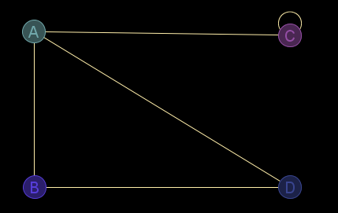

Descripción
Reordena las etiquetas de los nodos, modificando también el orden de las filas y columnas de la matriz de adyacencia y de los datos extra.
Cadena de entrada
gr_reordenar
Cadena de salida
GRAFO.reordenar
Uso
gr_reordenar(<grafo>,<etiquetas>)
Ejemplos
gr_nuevo([[0,1,1,1],[1,0,0,1],[1,0,1,0],[1,1,0,0]],['A','B','C','D'],falso,falso,verdadero,falso,['Alice','Bob','Carol','Dave'],[[nulo,5,1,3],[1,nulo,nulo,3],[3,nulo,-1,nulo],[5,6,nulo,nulo]])
Diccionario: { 'etiquetas': ['A','B','C','D'] 'ady': [[0,1,1,1],[1,0,0,1],[1,0,1,0],[1,1,0,0]] 'esDirigido': falso 'esPonderado': falso 'esPseudografo': verdadero 'esMultigrafo': falso 'nodoData': ['Alice','Bob','Carol','Dave'] 'aristaData': [['__null__',5,1,3],[1,'__null__','__null__',3],[3,'__null__',-1,'__null__'],[5,6,'__null__','__null__']] }
Salida JMEScriptGUI con visor de grafos v0.1:

eval(gr_reordenar(g,revertir(g><'etiquetas')),g,gr_nuevo([[0,1,1,1],[1,0,0,1],[1,0,1,0],[1,1,0,0]],['A','B','C','D'],falso,falso,verdadero,falso,['Alice','Bob','Carol','Dave'],[[nulo,5,1,3],[1,nulo,nulo,3],[3,nulo,-1,nulo],[5,6,nulo,nulo]]))
Diccionario: { 'etiquetas': ['D','C','B','A'] 'ady': [[0,0,1,1],[0,1,0,1],[1,0,0,1],[1,1,1,0]] 'esDirigido': falso 'esPonderado': falso 'esPseudografo': verdadero 'esMultigrafo': falso 'nodoData': ['Dave','Carol','Bob','Alice'] 'aristaData': [['__null__','__null__',6,5],['__null__',-1,'__null__',3],[3,'__null__','__null__',1],[3,1,5,'__null__']] }
Desde / Última modificación
v0.6.2.0